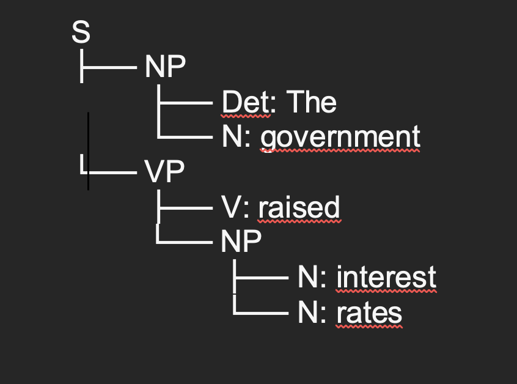
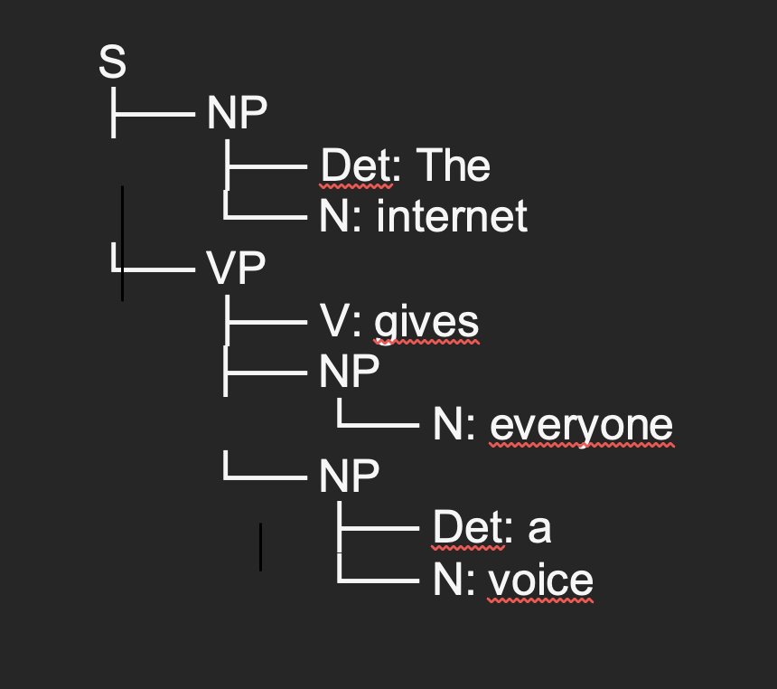
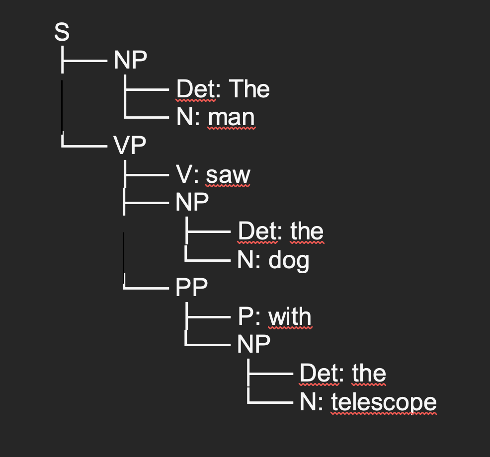

Understanding Natural Language Processing (NLP)
Formative Activity
Creating Parse Trees
The following activity demonstrates how parse trees help computers understand language. A parse tree shows how a sentence is built, dividing it into its constituents, such as Noun Phrases (NP) and Verb Phrases (VP). Multiple types of analyses of the phrase structure can be made, but construction in this section was inspired by Jiang and Diesner’s (2019) work on parsing trees for relation extraction. In early machine learning research, such as the study by Meng et al. (2013), these approaches were used to help translation systems produce better results by feeding them the syntactic structure of the phrase. Today, modern translators like DeepL use deep learning models that learn these sentence patterns automatically, without needing to manually build trees like we will see in the following examples. This makes translations sound more natural and closer to the way people actually speak.
In the sentence “The government raised interest rates”, the structure can be represented as:

Next, the representation for the sentence “The internet gives everyone a voice” is the following:

And for the last sentence, “The man saw the dog with the telescope”, which I interpreted as “The man looked at the dog through a telescope”, the structure looks like this:

References
- Jiang, M. and Diesner, J. (2019) ‘A constituency parsing tree based method for relation extraction from abstracts of scholarly publications’, Proceedings of the Thirteenth Workshop on Graph-Based Methods for Natural Language Processing (TextGraphs-13), pp. 186–191. Available at: https://www.aclweb.org/anthology/W19-4019. (Accessed: 20 October 2025).
- Meng, F., Xie, J., Song, L., Lü, Y. and Liu, Q. (2013) ‘Translation with source constituency and dependency trees’, Proceedings of the 2013 Conference on Empirical Methods in Natural Language Processing, Seattle, Washington, USA, 18–21 October. Association for Computational Linguistics, pp. 1066–1076. Available at: https://aclanthology.org/D13-1106/. (Accessed: 20 October 2025).